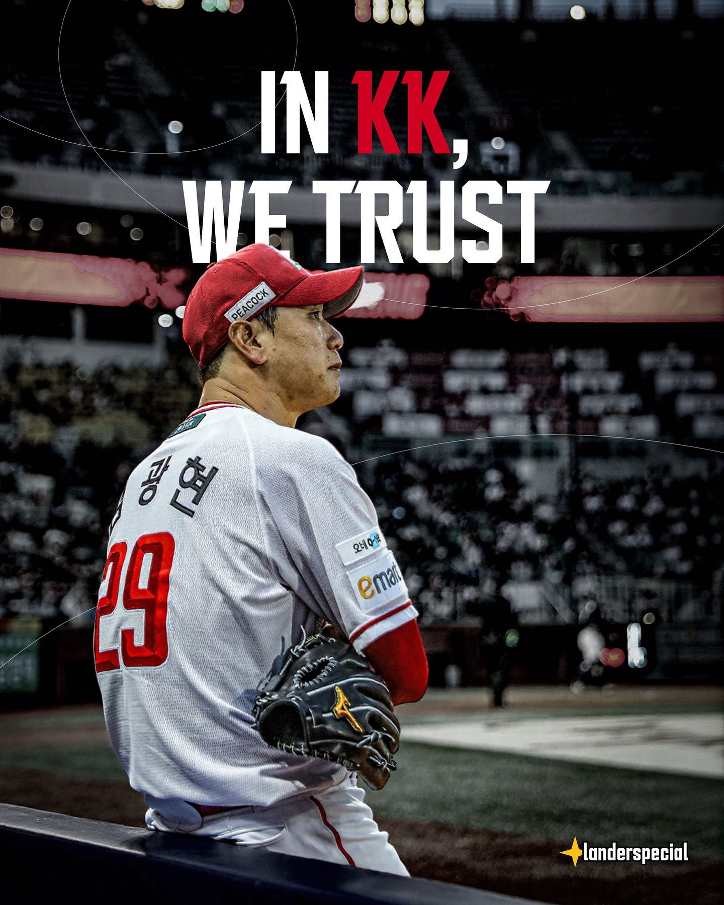
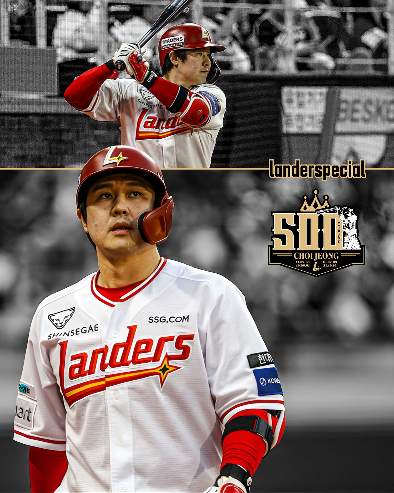

김광현 (Kim-Kwang-Hyun)
좌완 투수
좌완 투수
팀의 에이스이자 주장으로, 뛰어난 구위와 경기 운영 능력을 갖춘 좌완 투수다.
2020 시즌을 앞두고 세인트 루이스 카디널스와 계약하면서 포스팅 시스템을 통해 KBO 에서 MLB로 직행한 이후 역대 11번째로 MLB에서 승리 투수가 된 한국인 메이저리거가 됐으며, 2022시즌을 앞두고 친정인 SSG 랜더스로 4년 151억의 계약 당시 KBO 역대 최고 대우를 바드며 복귀했다.

'세상에 없던 프로야구단', 인천을 야구의 성지로 SSG 랜더스를 통해 기존과는 다른, 혁신적인 야구문화를 선 보이고자 합니다. 다순히 야구 경기만이 아닌, 팬들에게 다양한 즐거움과 경험을 주는 구단, 인천의 새로운 랜드마크를 만들고, 야구와 에터테이먼트를 결합한 스포테인먼트 산업을 선도하겠단는 포부를 가지고 있습니다.
신세계 그룹의 계열사인 이마트에서 운영하는 KBO리그 프로 야구단. 연고지는 인천광역, 전신은 2000년에 창다한 SK 와이번스, 2021년에 인수 했습니다. 구단명이 된 'SSG' 는 신세계 그룹의 온라인 쇼핑몰 사업을 전담하고 있는 SSG.COM, 기업명은 (주)신세계 야구단입니다.
SSG 랜더스의 현재 순위는 KBO 리그에서 6위 입니다. 2024 시즌에는 6위를 기록했고, 2022 시즌엔는 우승을 차지했습니다.
7
0.659
88

좌완 투수
팀의 에이스이자 주장으로, 뛰어난 구위와 경기 운영 능력을 갖춘 좌완 투수다.
2020 시즌을 앞두고 세인트 루이스 카디널스와 계약하면서 포스팅 시스템을 통해 KBO 에서 MLB로 직행한 이후 역대 11번째로 MLB에서 승리 투수가 된 한국인 메이저리거가 됐으며, 2022시즌을 앞두고 친정인 SSG 랜더스로 4년 151억의 계약 당시 KBO 역대 최고 대우를 바드며 복귀했다.

우투우타 내야수. 주 포지션은 3루수
KBO리그를 대표하는 홈런 타자이자 팀의 중심 타선을 이끄는 핵심 선수다.
SK와이번스 SSG랜더스의 20년차 원 클럽 맨이자, 프랜차이즈 스타. 팀의 KBO 한국 시리즈 5회 우승을 이끌었고, 3루수 KBO 골든 글러브를 8회, 홈런왕을 3회 차지하였다. 이승엽을 넘어 KBO리그 개인 통산 최다 홈런 기록을 이어나가고 있으며, 역대 최초로 20년 연속 두 자릿수 홈런을 기록했다. 2025 년 정규 시즌 중에 KBO 역대 최초의 개인 통산 500홈런 기록을 달성하였다.